Sakai教学平台
使
用
手
册
目录
1. 教学系统概述
在系统平台中，管理员的职能主要包括用户管理、站点管理、领域编辑器、站点设置、MOTD、资源、教务集成、仪表盘、课程大纲、课程组织、日程、成绩册（NG）、视频会议、站点统计等。成功登录系统后，进入我的工作空间模块，可以进行信息的添加和修改。系统管理员对系统的所有模块均有操作权限。
1.1 用户管理
管理员可以创建、添加、管理用户，只有成功添加用户，才可以赋予平台访问者使用本系统相关功能的权限。说明：用户和课程是和管理系统通过接口自动同步的。如果有特殊的修改要求可以通过“用户管理”工具进行用户信息的更改。
1.1.1 添加新用户
1. 管理员登陆系统，进入“我的工作空间”，点击“用户管理”板块，进入用户管理页面。如图1所示：

图1用户管理
2.点击“新用户”按钮，进入创建帐号页面。如图2所示：

图2创建帐号
3.进入新页面进行编辑，输入“用户ID”等信息，点击保存细节，完成新用户的创建。
1.1.2 查看、修改用户信息
查看用户信息
在用户列表中点击个人用户ID，即可查看相关信息。
修改用户信息
在用户列表中点击用户ID，进入帐户信息页面，可以在栏中修改用户信息。如图3所示：
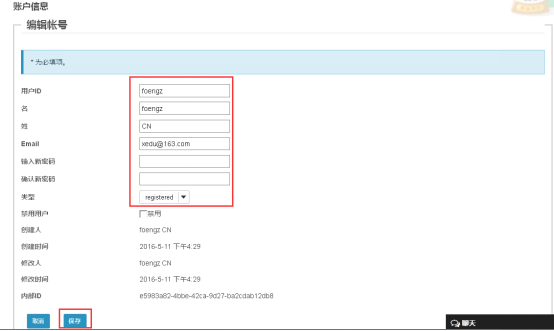
图3修改帐户
1.1.3 删除用户
在用户列表点击用户ID，进入帐户信息页面，点击左上角“移除用户”按钮，即可删除用户信息。如图4所示：

图4删除用户
1.2站点设置
站点设置工具提供了您所属的或要加入的站点的信息。管理员可以使用“站点设置”工具来更改站点的信息、可用工具和访问控制。同样也可以使用站点设置工具来创建和发布course站点或project站点。
进入我的工作空间，点击左侧“站点设置”，进入站点设置页面，以管理员的身份进行课程站点的建立和修改、删除等工作。如图5所示：

图5 站点设置页面
1.2.1新建站点
1.选择“新建”按钮进入新建站点页面，选择需要建立的站点。project站点建立项目站点，course站点建立课程站点。如图6所示：
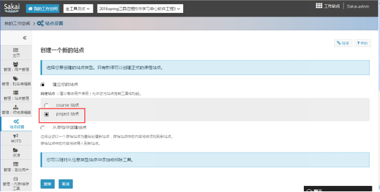
图6 新建站点页面
2. 选择项目站点，点击“继续”按钮，进入填写项目信息页面。如图7所示：
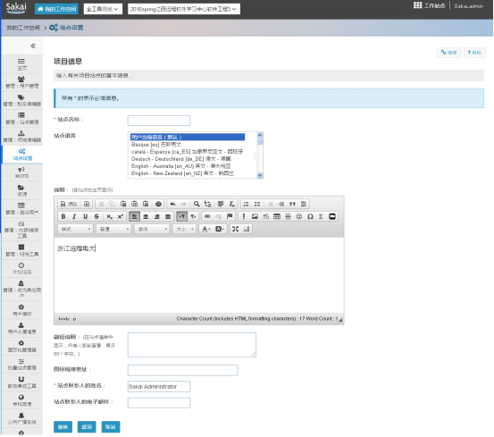
图7项目信息
3. 填写项目信息后，点击继续按钮，进入为课程功能站点添加工具页面，并选择是否与其他站点共用资源。如图8所示：
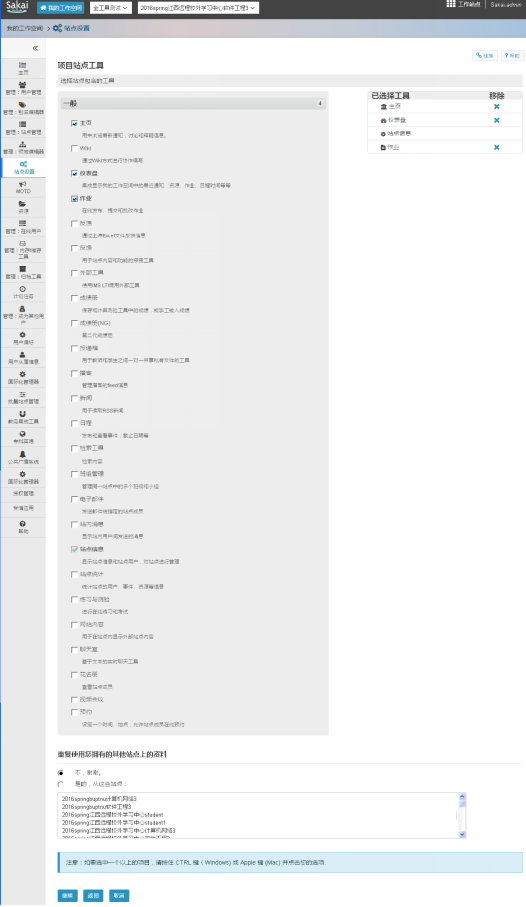
图8项目站点添加工具
4. 设置站点是否公开、是否发布、是否许可全员访问等。如图9所示：

图9设置进入权选项
5. 点击继续按钮进入确认您的项目展示设置页面。如图10所示：

图10确认项目站点设置
6. 点击“创建站点”按钮，成功返回站点设置页面，列表显示已创建的站点。如图11所示：

图11站点设置
1.2.2修改站点
1.在站点设置工具下，勾选需要修改的课程站点，点击“修改”按钮。如图12所示：
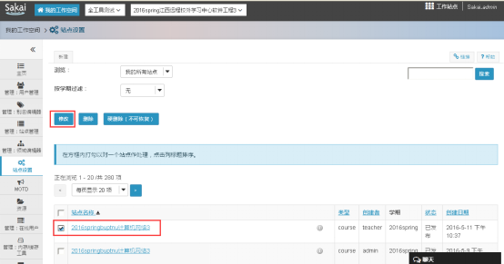
图12 修改站点
1. 进入修改页面后，可以按需求进行修改，如编辑站点信息、编辑工具、添加参与者等等。如图13所示：

图13 修改站点页面
1.2.3修改站点信息
1.点击“编辑站点信息”；
2. 在“说明”下面的区域，输入你想要显示在站点的站点信息显示框中的信息。
3.点击“继续”，点击“完成”。如图14所示：
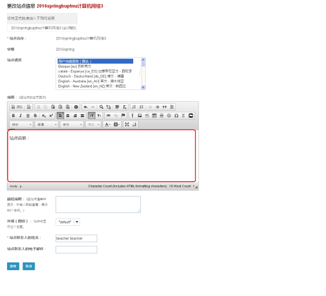
图14 编辑站点信息
4.站点信息更改后，点击“继续”按钮，进入下一个确认页面，确认完毕后，点击完成按钮即可。如图15所示：
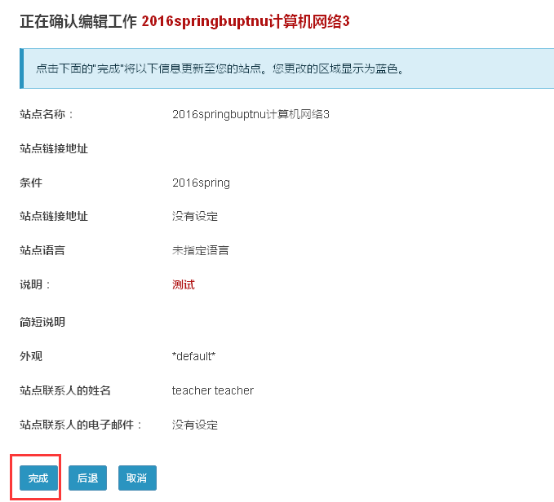
图15更新站点信息
1.2.4添加、编辑、删除站点工具
1.在修改站点页面点击“编辑工具”按钮，进入课程站点工具页面，勾选想要增加的工具，删除则点击右侧删除工具的按钮。如图16所示：

图16 添加、删除工具
2.点击“继续”按钮。
3.在确认站点工具页面中，会看到站点的工具列表及所作的修改。如果列表正确，单击“完成”。如果需要编辑所作的修改，点击“返回”，或者您想取消所作修改，点击“取消”。
1.2.5更改工具顺序
1. 点击“页顺序”进入页面顺序页面，鼠标拖动进行排序。如图17所示：
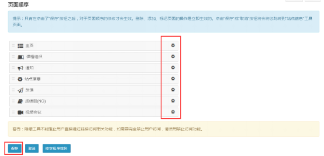
图17 更改页顺序
2. 页面顺序排序完成后，点击“保存”按钮即可保存成功。
3. 点击“按字母顺序排列”，然后点击“保存”按钮即可保存成功。
1.2.6增加、编辑或删除站点成员
添加站点成员:
1.点击“添加站点成员”；
说明：对于拥有正式用户名的参与者，在“其他正式参与者”下面的文本框中输入用户名。若想一次添加多个用户，只需在输入时每个名字占一行。
对于没有正式用户名的参与者，在“非正式参与者”下的文本框中输入他们的email地址，每个email占一行。
2.在“成员角色”下选择是否赋予全部新增成员相同的角色或不同的角色。如图18所示：
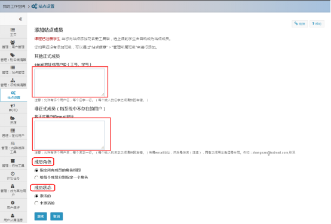
图18 添加站点成员
3.在下一个设定成员角色页面中，如果您之前选择“指定所有成员的角色相同”，则为他们选择合适的角色。 如果您选择“给每个成员分别指定一个角色”，使用每一个名字旁的下拉菜单为其选择合适的角色。如图19所示：
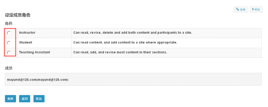
图19 设定成员角色
4.选择是否自动发送邮件给新的成员，以通知他们已经可以使用站点。如图20所示：

图20 选择是否通知成员
5.选择是否通知成员站点是否可以后，点击“继续”按钮进入确认添加成员页面，点击“完成”按钮即可完成添加。
编辑或删除站点成员:
1.在站点成员列表中,使用“身份”下拉菜单来改变站点成员的角色。
2.使用“状态”下拉菜单来激活或不激活站点成员。
3.在站点成员列表中，“删除”列下面，勾选您想要删除的站点成员旁的复选框。
4.点击“更新站点成员”。
5.可以将课程内参与者信息进行更改，如身份、状态的更改，还可将某些参与者删除。如图21所示：
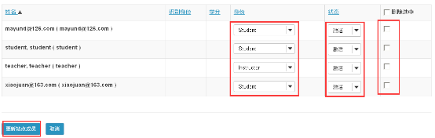
图21 编辑或删除站点成员
1.2.7管理所属班级
管理所属班级
可给课程站点添加所属班级，也可以移除课程信息。
点击“管理所属班级”，进入编辑关联课程页面。如图22所示：
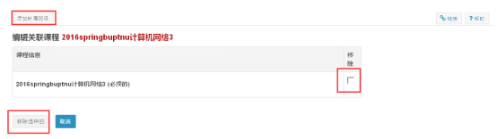
图22编辑关联课程
勾选课程，点击“移除选中的”按钮，则成功删除此课程。
点击“添加所属班级”按钮，进入到编辑站点页面。如图23所示：

图23编辑站点
点击“添加不在上面列表里的课程/平行班”链接，进入创建一个新的课程站点页面。如图24所示：

图24创建新的课程站点
在这个页面可以删除将要关联的班级，还可以选择平行班，填写授权者的用户名，点击“继续”按钮进入要求站点进入权页面，点击添加班级按钮即可成功添加班级。如图25所示：

图25添加班级
1.2.8小组管理
点击"站点信息”里的"小组管理",开始创建新小组.如图26所示

图26小组管理
进入小组管理,创建新小组,如图27所示

图27创建新小组
创建新小组,添加小组名称,是否允许成员看到此小组中的其他成员,添加列表成员,完成后点击"添加”,如图28所示
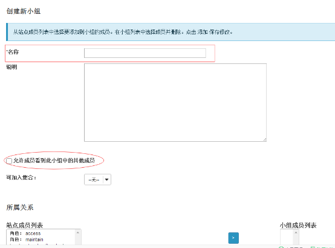
图28新小组的创建
添加列表成员,如图29所示
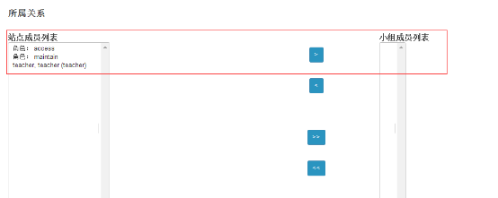
图29添加列表成员
删除创建的新小组:
如若删除创建后的小组,选中所要删除的小组名,点击"删除",即可完成删除操作,如图30所示
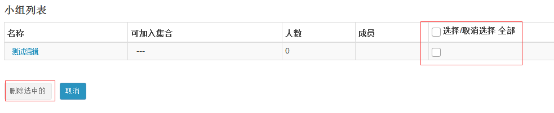
图30删除小组
创建新的可加入集合, 可加入集合包含自动创建的小组,并允许用户选择性加入.集合中的每个小组以集合名开头,已数字结尾.每个用户只能加入集合中的一个小组,如图31所示
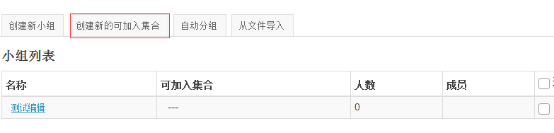
图31创建新集合
创建可加入集合,添加"集合名称"、”小组数量”、”每个小组的最大成员数",完成后点击“添加”，如图32所示
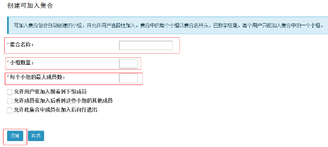
图32创建可加入集合
从文件导入小组，CSV文件应当在列中包含小组的详细信息，包括小组名称，用户名。必须按以上顺序安排列，但 不要包含列头.字段间必须使用逗号(,)分隔，字段间不应有空格，如果字段内需要包含空格，请使用双引号("")标记字段。如图33所示
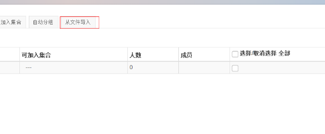
图33从文件导入
选择上传文件，完成后点击“继续”如图34所示
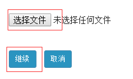
图34选择文
1.3站点管理
管理员登录教学系统，进入页面点击“站点管理”，进入“站点管理”页面，如图35所示

图35站点管理
1.3.1添加新站点
进入站点管理，点击左上角“新站点”按钮；
进入编辑页面，填入站点ID，描述等内容，并选择是否公布等选项，进行站点的编辑，即可添加一门新课程的站点，如图36所示

图36添加新站点
1.3.2修改或删除站点
点击站点ID进入站点，可进行修改或删除，如图37所示

图37修改或删除站点
1.3.3添加新页面
点击原有创建的站点，点击“添加/编辑页面”编辑新页面，如图38所示

图38添加新页面
新页面创建，如图39所示

图39新页面
添加新页面，添加新标题，点击工具从“新工具”中选取要添加的新页面，如图40所示

图40新页面添加
选取新工具，如图41所示
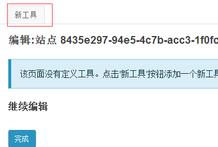
图41新工具
选取要添加的新工具，完成后点击保存，如图42所示

图42选取工具
1.3.4站点搜索
站点搜索，可通过站点ID和用户ID搜索站点，如图43所示

图43搜索站点
1.4领域编辑器
在我的工作空间下，进入领域编辑页面，可进行新领域的建立和领域的搜索工作。如图44所示

图44领域编辑页面
1.4.1新领域
点击“新领域”按钮，进入编辑页面，输入“领域ID”等相关信息，输入“领域ID”等相关信息，保存信息，如图45所示

图45添加新领域
1.4.2领域实质
在红框处输入“!site.template”。修改!site.template模板权限，则以后新建的站点对应权限也会相应的修改。
点击下面对应的!site.template（project站点权限模板）进入，如图46所示
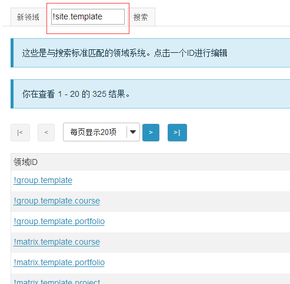
图46搜索领域
点击access进入后，找到course.space.access（对应课程学习access的权限）选中。
点击maintain进入后，找到course.space.maintain（对应课程学习maintain的权限），courseware.perm.maintain（对应课件管理maintain的权限），jforum.manage（对应论坛maintain的权限）选中，如图47所示

图47添加角色
1.4.3修改/删除领域
建立号新领域后，会显示领域ID，如图48所示

图48领域ID显示
直接查找或进行搜索后点击需要修改的ID，进入修改页面，进行增加角色、赋予权限等的修改，或点击“移除领域”进行删除。在角色ID处，可以分别点击不同的角色赋予其权限，如图49所示

图49领域编辑页面
1.5 MOTD
同户登录教学系统，点击“MOTD”，进入主页面，添加通知，如图50所示

图50MOTD主页面
1.5.1添加通知
添加通知，首先进行通知标题添加，输入要通知的内容，是否显示发布，可添加附件，完成后点击“添加通知”，如图51所示
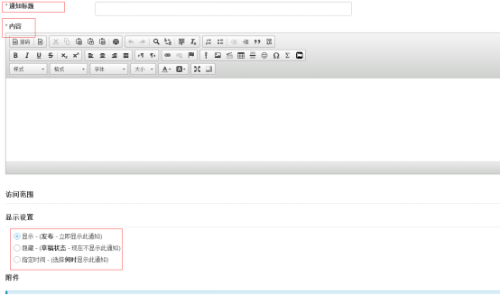
图51添加新通知
1.5.2修改/删除通知
删除或修改通知，点击通知左下角的编辑进行修改，如若想删除，点击通知右下角删除项进行删除操作，如图52所示

图52编辑通知
1.6 教务集成
用户登录教学系统，进入集成页面，添加学期/学院，如图53所示

图53教务集成页面
1.6.1添加学期
点击学期下面的“新增”，进行学期添加，完成后点击提交，如图54所示

图54添加学期
1.6.2添加学院
点击学院下的“新增”进行学院添加，完成后点击保存，如图55所示
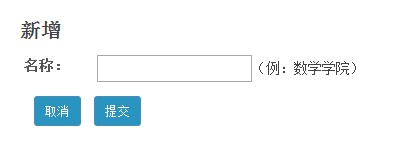
图55添加学院
1.6.3导入开课文件
学院创建完成后，会出现在页面上，点击查看，导入开课文件，如图56所示

图56新学院
进入查看，进行导入，如图57、58所示

图57课程列表
图58导入文件
1.6.4删除
删除学期或学院，点击创建好的学期或学院右下角进行删除，如图59所示
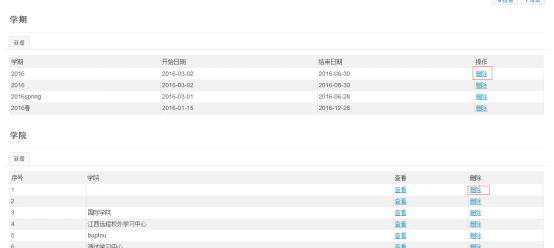
图59删除学期/学院
1.7 课程大纲
在教学系统中，课程大纲是关于课程内容的正式简要说明。作为一名教师，若课程大纲已发布于网站，就可以直接将“课程大纲”工具的链接直接指向此份已发布的网页即可。
若课程大纲尚未上网，那么，教师可利用系统的“课程大纲”工具来输入并发布。创建课程大纲时，可将其访问权限设为完全开放或仅本课程的学生可访问。
有时，课程大纲可分为两部分来发布。例如，利用“课程大纲”工具来发布有关课程教学内容的简介，同时，利用“日程安排”工具来发布本课程的详细教学进程安排。
1.7.1添加项目
进入课程大纲，点击添加项目，如图60所示

图60课程大纲页面
添加项目，输入标题，添加内容，完成后点击“添加/添加并发布”，如图61所示

图61添加项目
完成后点击项目右下角添加“开始/结束时间”，如图62所示

图62添加时间
1.7.2批量添加
根据所需数量，或者时间范围来批量创建大纲项目，如果设定了开始、结束时间，大纲项目的数量将根据时间范围来决定，如图62所示

图62批量添加
1.7.3使用链接
教师可将课程的课程大纲链接一个已上传至“资源库”的HTM网页，或者一份课程之外的URL链接。若想利用此功能，按照以下步骤操作：
1.在菜单栏中点击“教学大纲”工具；
2.点击“使用链接”；
3.在“URL”输入框中填写欲链接的教学大纲URL；
4.点击“保存”如图。63所示
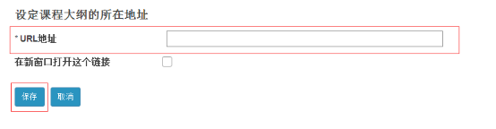
图63添加链接
1.7.4删除一项大纲内容
若想删除大纲内容，点击大纲标题处的红色叉号即可删除，如图64所示
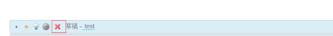
图64删除大纲内容
1.7.5批量编辑
点击批来那个编辑，进入页面，点击“编辑细节”进行编辑，如图65所示


图65批量编辑
1.8 日程
用户登录教学系统，点击日程进入页面，创建“新建事件”，如图66所示
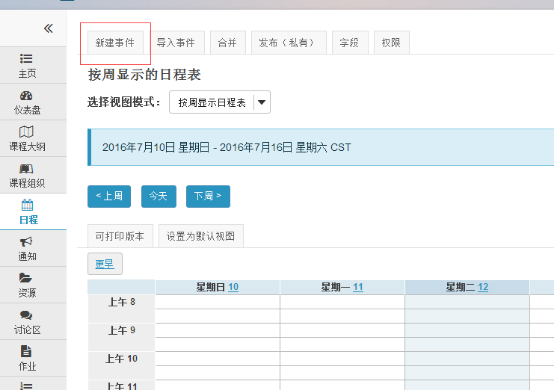
图66日程页面
1.8.1建新事件
创建新事件完成后点击保存，如图67所示

图67创建新事件
1.8.2导入事件
点击导入事件进入页面，导入日程表选择类型，确定后点击继续，如图68所示
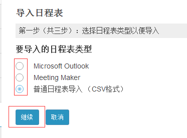
图68导入日程表
日程表导入，选择后点击继续，确定后点击导入事件，如图69所示

图69文件导入
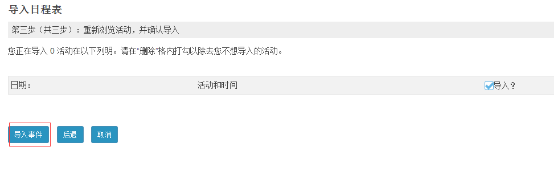
导入事件
1.8.3选择试图模式
可根据：天、星期、月、年，进行不同的试图模式，如图70所示

图70试图模式
1.9视频直播
视频会议，创建会议设定参会人员，可进行远距离交流，起到所达到的目的
1.9.1 视频直播
用户登录教学系统，点击视频会议，进入主页面，点击创建会议，如图71所示

图71视频会议页面
会议创建，设定会议名称和介绍，参加会议的人，完成后点击保存，如图72所示

图72创建会议
1.9.2编辑/删除
编辑或删除会议，点击会议左下角，进行编辑或删除，如图80所示
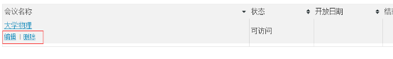
图73编辑/删除页面
1.9.3参加会议
点击所创建好的会议，进入页面，点击参加会议，如图74所示
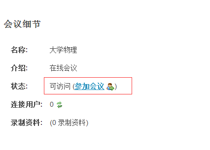
图74会议页面
进行会议的召开，如图75所示

图75召开会议
1.9.4权限
在当前站点设定会议工具的权限，完成后点击保存，如图76所示
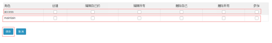
图76权限设定
2.0站点统计
站点统计可查询学生访问本课程次数与日期，有什么活动，下载的资源，还可查询课程组织页面，添加报表，参数
2.0.1概览
可查询学生的访问记录，学生活动事件，资源浏览与下载，课程组织页面的访问次数与查询用户，如图77所示
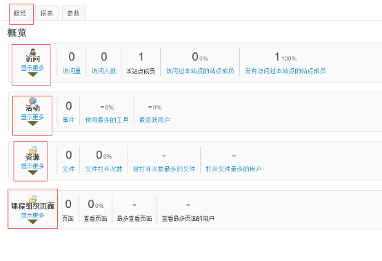
图77概论页面
2.0.2报表
用户登录教学系统，进入课程，点击站点统计，点击报表添加报表，如图78所示

图78报表页面
添加报表，点击添加进入添加页面，填写报表内容，完成后可选择“生成报表或保存报表”，如图79所示

图79添加报表
2.0.3参数
参数可设定可以察看那些工具，可图标展示参数，设定后点击更新，如图80所示

图80参数页面